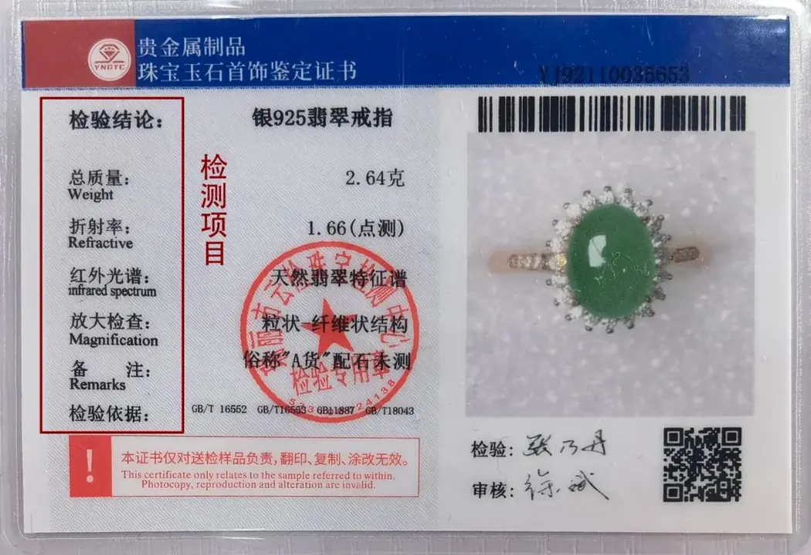

買寶石的十個自保步驟
買寶石不是賭運氣，是一套可以練習的流程——十個步驟走完，騙子自動繞開你。

核心定義
買寶石最貴的不是價格，是「資訊差」——賣家比你懂，你就有風險。自保的邏輯不是「找一個誠實賣家」，而是「把自己變成難騙的買家」：十個步驟，一套流程。
核心心法：永遠可以等一下、永遠可以比三家、永遠可以拒絕——真寶石不會跑，急著賣你的，才需要你急著買。
特徵與分類
| 步驟 | 做什麼 | 防什麼 |
|---|---|---|
| 1 定預算 | 先定上限 | 衝動超支 |
| 2 查行情 | 比對 4C/市場價 | 溢價宰客 |
| 3 要證書 | GIA/實驗室報告 | 無證書混水 |
| 4 問處理 | 加熱/注油/染色 | 隱瞞處理 |
| 5 獨立鑑定 | 第三方實驗室 | 賣家自鑑 |
| 6 看燈光 | 自然光下看 | 燈光美化 |
| 7 比三家 | 同規格詢價 | 單一報價 |
| 8 留憑證 | 發票+鑑定書 | 事後無據 |
| 9 分期付款 | 大額不急結 | 退款困難 |
| 10 相信直覺 | 不舒服就停 | 被話術推著走 |
十步中最關鍵的是第 4 步「問處理」與第 5 步「獨立鑑定」——多數消費糾紛，都發生在「沒問處理」與「信了賣家」上。
科學原理
為什麼要「自然光下看」？因為店內鹵素燈與 LED 燈會強化寶石的亮光與顏色——同一顆石頭在自然光下可能暗淡一個等級。這是物理，不是店家故意（但你要主動要求）。
為什麼要獨立鑑定？因為賣家的「現場鑑定」有利益衝突——第三方實驗室的報告不買不賣，它的結論才值得信任。這是經濟學上的「獨立第三方」邏輯。
鑑定與鑑別方法
- 先做功課：目標寶石的 4C/處理/行情
- 要求出示證書並上網驗證編號
- 自然光+白紙上觀察顏色
- 黑布上觀察火彩與亮光
- 成交前要求書面註明「處理狀態」
市場行情與保養建議
成本參考（2026 年）：GIA 證書鑑定費新台幣數千元、本地實驗室數百至數千元——相對於數萬至數十萬的珠寶價，鑑定費是「零頭保命錢」。
提醒：獨立鑑定不只驗真假，也驗「處理」與「產地聲明」——花小錢，省大錢。價格僅供參考，非投資建議。
常見誤區
證書要看發證機構（GIA 等國際實驗室）與內容（有無處理註記）——小店的「自製證書」一文不值。
價格與誠實無關——高價店也可能賣處理貨。自保靠流程，不靠價格。
冷知識
GIA 報告右上角有報告編號——上 gia.edu 輸入編號即可核對，這是全球通用的「防偽查詢」。
多數國家對「訂製/刻字」珠寶不適用無條件退貨——所以更要先鑑定、後付款。
反直覺觀點
當你猶豫、當價格好到不合理、當賣家催促——最好的決定常常是「今天不買」。錯過好貨的損失，遠小於買錯的損失。
很多人想「確認了再付鑑定費」——但獨立鑑定就是要先花小錢。先付鑑定費，是買寶石最划算的一筆支出。